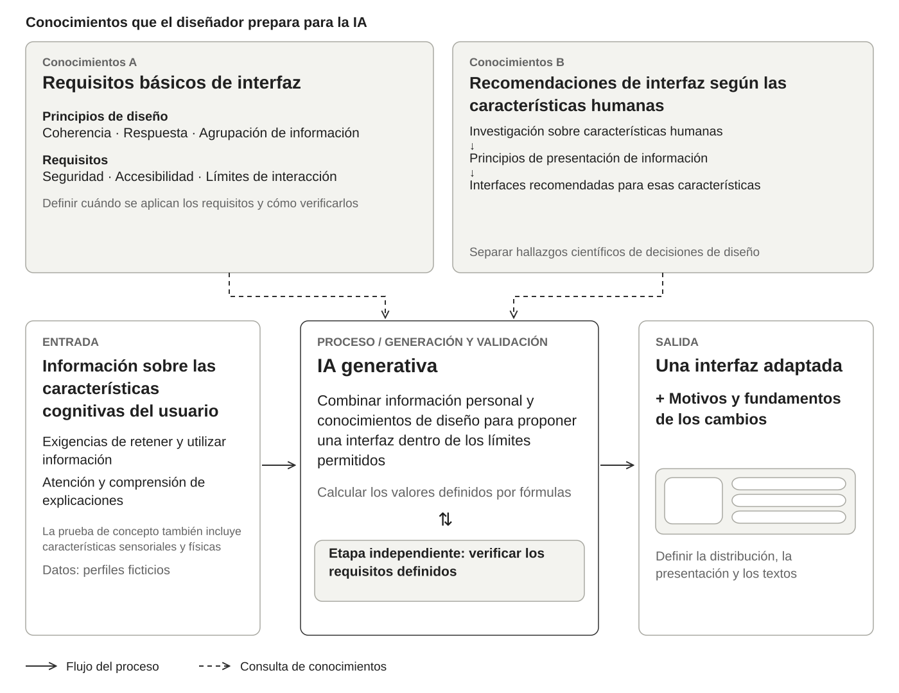
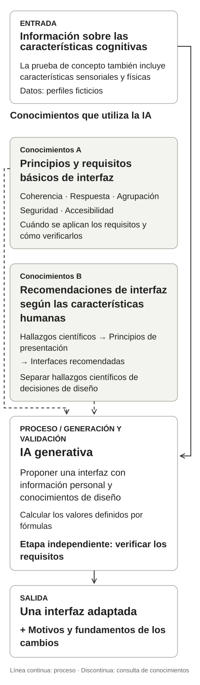
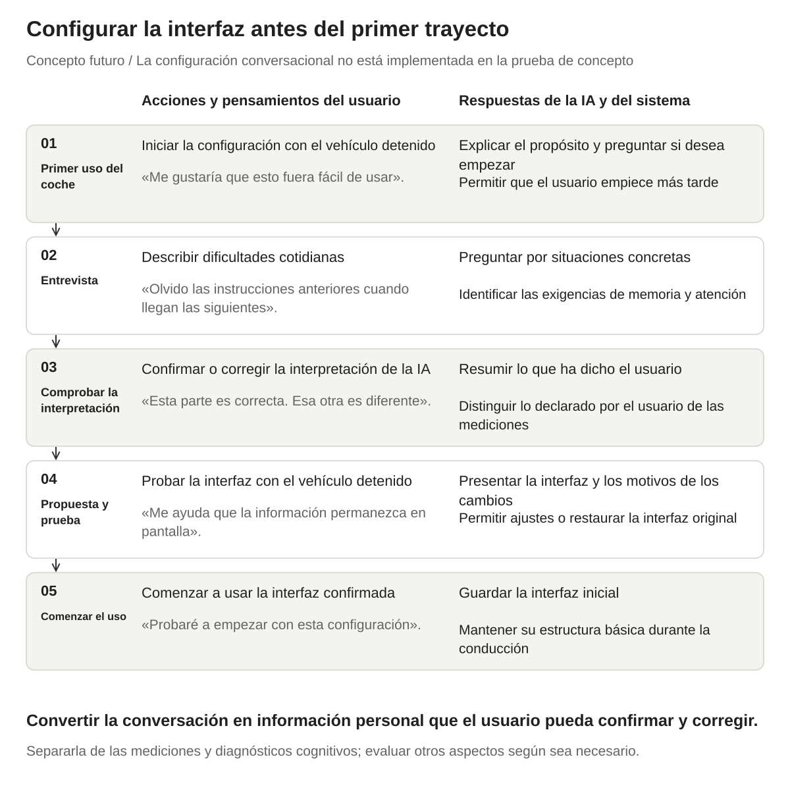
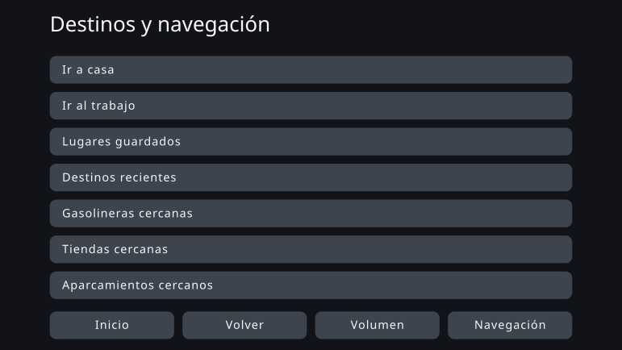
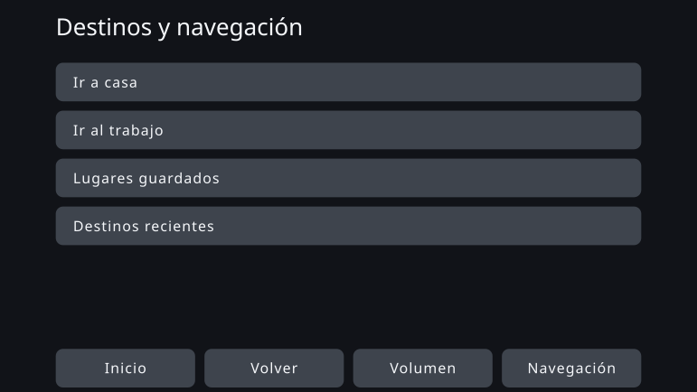
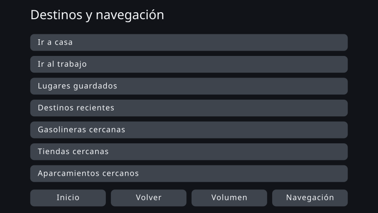

Personalizar interfaces mediante un diseño guiado por restricciones
agosto de 2026
Visión general
Este proyecto propone un sistema que recibe información sobre características cognitivas relevantes para el uso de interfaces y genera una interfaz adaptada a esa persona. Combina principios de diseño de interfaces, requisitos de seguridad y accesibilidad e investigación sobre las características humanas.
Utilicé un enfoque que denomino diseño guiado por restricciones: las personas definen los requisitos y cuándo se aplican, y la IA generativa desarrolla propuestas concretas dentro de esos límites. Tomando la navegación para automóviles como caso de prueba, construí una prueba de concepto que genera interfaces para 13 perfiles ficticios, incluidas características sensoriales y físicas, y valida el cumplimiento de los requisitos en una etapa independiente.
La comparación reveló un cambio claro en la distribución de la pantalla en respuesta a una característica física, mientras que la mayoría de los resultados mostraron pocos cambios visuales. La usabilidad y la seguridad no se han probado con usuarios. El trabajo ayudó a identificar qué decisiones podían dejarse a la IA generativa y qué requisitos limitaban el margen de personalización.
Contexto: ¿cuántas necesidades distintas puede atender una sola interfaz?
La mayoría de los productos ofrece una interfaz común diseñada para el mayor número posible de personas. Pero las personas difieren en cuánta información pueden procesar a la vez, la facilidad con la que dirigen su atención, comprenden los textos u operan controles pequeños con precisión. Una interfaz diseñada para muchas personas puede seguir siendo poco adecuada para un individuo.
La evaluación a escala de grupo también tiene límites. Por ejemplo, las directrices voluntarias publicadas por la NHTSA en 2013 requieren que al menos 21 de 24 participantes cumplan cada criterio de aceptación de las miradas. Esto no significa que todas las personas puedan usar la interfaz con la misma facilidad. [1]
Aunque un producto permita cambiar el tamaño del texto o la cantidad de información mostrada, el usuario primero debe descubrir esos ajustes, reconocer su relación con las dificultades que encuentra y elegir una modificación adecuada. Comencé preguntándome si estas opciones se utilizaban poco y dejaban a las personas con interfaces que no se ajustaban a sus necesidades.
En la navegación para automóviles, mirar y manejar la pantalla compite con la atención necesaria para conducir. [1] Si una interfaz poco adecuada añade carga, merece la pena explorar si una interfaz adaptada desde el principio podría favorecer tanto la usabilidad como la seguridad.
La IA generativa hizo posible crear un prototipo de un proceso que transforma información personal y conocimientos de diseño en una interfaz. Exploré si esto podía reducir el trabajo de diseñar manualmente una interfaz distinta para cada persona.
Este proyecto no examinó con qué frecuencia se utilizan esos ajustes ni cómo influye una interfaz poco adecuada en el riesgo de accidentes.
Propuesta: combinar información personal con dos tipos de conocimiento de diseño
El sistema recibe información sobre características cognitivas relevantes para el uso de interfaces. Esta prueba de concepto utilizó perfiles ficticios que también incluían características sensoriales y físicas. La IA considera esa información junto con dos conjuntos de conocimientos preparados de antemano: reglas básicas de diseño de interfaces y conocimientos que relacionan las características humanas con diseños de interfaz recomendados.
La IA genera una interfaz dentro de los límites permitidos y una comprobación independiente valida su cumplimiento de los requisitos. El resultado incluye la interfaz adaptada y una explicación de qué cambió y por qué.


Entrada: información sobre la persona
Las entradas incluyen la facilidad para retener y utilizar información, la susceptibilidad a distraerse con otros estímulos y los tipos de explicación que resultan más fáciles de comprender. La implementación también abarca la visión y la destreza manual. Utiliza información relevante para interactuar con una interfaz, en lugar de determinar la pantalla únicamente a partir de un diagnóstico.
Conocimiento A: requisitos básicos de la interfaz
Este conjunto abarca principios básicos de diseño de interfaces: coherencia, respuesta a las acciones, agrupación de la información y visibilidad del texto y los controles. También define restricciones de interacción en el vehículo y requisitos de accesibilidad, junto con las situaciones en las que se aplican.
Conocimiento B: relacionar características humanas con interfaces recomendadas
Este conjunto conecta la investigación sobre características humanas con principios de presentación de información y, a partir de ellos, con el diseño de interfaces. Por ejemplo, la dificultad para retener información mentalmente mientras se realiza una tarea sugiere reducir las exigencias de memoria, lo que puede llevar a mantener la información necesaria en pantalla.
Los resultados de investigación no siempre proporcionan valores de diseño concretos para una interfaz de navegación. Distingo lo que establece la investigación de las decisiones de diseño que derivo de ella. Las mejoras que benefician a todos se incluyen en las reglas básicas, en lugar de contarse como resultados de la personalización.
Experiencia propuesta: encontrar una interfaz adecuada antes del primer trayecto
Concepto futuro: la configuración mediante conversación no se ha implementado en esta prueba de concepto.
Imagina que te sientas por primera vez al volante de un coche nuevo. Con el vehículo detenido, un agente de IA te pregunta por tus experiencias habituales. En lugar de navegar por ajustes técnicos, describes qué te resulta difícil y qué te funciona bien.

-
Antes del primer trayecto: iniciar la conversación
IA: «Para adaptar la pantalla a ti, ¿podrías contarme un poco cómo sueles usar las interfaces? Podemos hacerlo más tarde si lo prefieres».
El usuario comprende la finalidad y decide si quiere empezar ahora o más tarde.
-
Entrevista: describir las dificultades
IA: «Cuando las indicaciones de navegación llegan una tras otra, ¿qué te cuesta seguir?».
Usuario: «Cuando llega la siguiente indicación, a veces olvido lo que decía la anterior».
La IA pregunta por situaciones concretas e identifica dificultades relacionadas con la memoria y la atención.
-
Comprobar la interpretación: permitir que el usuario corrija a la IA
IA: «Por lo que dices, te resultaría más fácil mantener la información en pantalla que recordar los pasos. ¿Lo he entendido bien?».
El usuario confirma o corrige la interpretación de la IA. La información que aporta en la conversación se mantiene separada de las mediciones cognitivas y los diagnósticos. Cualquier información que requiera medición se evaluaría por separado.
-
Propuesta y prueba: explicar los cambios y probar la interfaz
IA: «Para reducir lo que necesitas recordar, propongo una pantalla que muestre tanto la acción actual como el siguiente paso».
Con el vehículo detenido, el usuario prueba tareas como elegir un destino. Puede decir «La versión anterior era más clara» o «Cambiaría este texto». La propuesta puede ajustarse o puede restaurarse la interfaz original.
-
Comenzar a utilizar la interfaz confirmada
La interfaz confirmada se guarda como configuración inicial. Su estructura básica se mantiene estable mientras el coche está en movimiento, de modo que el usuario puede apoyarse en lo aprendido. Puede volver a revisarla y ajustarla con el vehículo detenido.
La conversación busca establecer una configuración inicial adecuada mediante un intercambio en el que el usuario pueda explicar sus necesidades y corregir malentendidos. No consiste en clasificarlo de una vez para siempre.
Implementación: separar los requisitos fijos de las decisiones confiadas a la IA
Implementé el proceso completo, desde recibir información sobre las características de una persona hasta generar, validar, representar y comparar interfaces. En lugar de una entrevista conversacional, utilicé como entrada 13 perfiles ficticios con distintas características.
Elegí la navegación para automóviles porque ofrece requisitos concretos con los que trabajar: superficie de pantalla, tamaño de las zonas táctiles, cantidad de información mostrada e interacciones permitidas durante la conducción.
El enfoque de diseño guiado por restricciones
En este proyecto, el diseño guiado por restricciones significa que las personas definen los requisitos y cuándo se aplican, y la IA propone soluciones dentro de esos límites.
Un enfoque paramétrico basado en reglas define de antemano qué valor u opción corresponde a cada entrada. Aquí definí los rangos permitidos y la evidencia que respalda cada decisión, dejando a la IA generativa la elección de valores y textos que no estaban fijados. La implementación combina valores calculados con decisiones generadas por IA.
| Lo que establece la evidencia | Cómo se implementa |
|---|---|
| Se ha establecido un valor concreto o una relación matemática | Calcular el valor dentro de las condiciones verificadas y del ámbito de aplicación |
| Se conoce la dirección del ajuste, pero no su magnitud | Elegir un valor coherente con esa dirección y con las restricciones, y registrarlo como una decisión de diseño no comprobada |
| La evidencia no determina una elección adecuada | Tratar el resultado como una propuesta exploratoria que requiere evaluación |
Al trasladar los resultados de investigación a decisiones de interfaz, registré las fuentes, las condiciones de aplicación y las decisiones de diseño. La interfaz generada incluye los motivos de los cambios, lo que permite rastrear por qué se propuso un diseño concreto para una persona determinada.
Validar la interfaz generada en una etapa independiente
La interfaz se genera como datos estructurados que describen los elementos de pantalla y su disposición, y después se representa a partir de esos datos. El código comprueba los requisitos numéricos y estructurales. Una comprobación independiente mediante un modelo de lenguaje de gran tamaño (LLM) evalúa algunos requisitos que implican interpretar el significado. El sistema también registra los aspectos fuera del alcance de las comprobaciones automáticas y los que no pueden verificarse por falta de información.
Estas comprobaciones establecen si el resultado cumple los requisitos definidos. Sigue siendo necesaria una evaluación con usuarios para determinar si resulta más fácil de usar o más seguro.
Si durante el diseño se encuentran requisitos contradictorios, la IA los identifica y una persona decide cómo revisarlos. La IA no cambia los requisitos por su cuenta cada vez que genera una interfaz.
Comparación de interfaces: un cambio claro de distribución y una distribución casi sin cambios
La comparación utiliza una interfaz predeterminada común generada sin características personales como entrada. La comparé con interfaces generadas a partir de características personales, utilizando el mismo conjunto de funciones.
Las imágenes siguientes son resultados del prototipo, no versiones anteriores y posteriores del rediseño de un sistema comercial de navegación. Los perfiles ficticios se utilizaron como entradas para examinar el efecto de determinadas características; no representan a usuarios reales.
Zonas táctiles más grandes
PS-12: un perfil con dificultad para realizar pulsaciones precisas
PS-12 tiene la misma edad y las mismas características cognitivas y sensoriales que el perfil de referencia PS-01; solo cambia la destreza manual. En las imágenes, las zonas táctiles son mayores y la cantidad de elementos en el centro de la pantalla se reduce de siete a cuatro. Este recuento excluye los botones fijos de la parte inferior.
Interfaz predeterminada común


Interfaz generada a partir de características personales


Unas zonas táctiles mayores permiten seleccionar menos elementos en una misma pantalla. El diseño busca mantener las mismas funciones, pero esta captura por sí sola no permite determinar la facilidad para navegar a las pantallas siguientes.
Una distribución casi sin cambios
PS-01: el perfil de referencia
El tamaño del texto varía ligeramente, pero la cantidad de elementos, su disposición y el tamaño de las zonas táctiles se mantienen prácticamente iguales. Con esta combinación de reglas y entradas, la distribución generada no difirió sustancialmente de la interfaz predeterminada común.
Interfaz predeterminada común

Interfaz generada a partir de características personales


Resultados y análisis: ¿cuánta libertad quedaba para la generación?
El valor añadido de la IA generativa sigue sin demostrarse
En mi comparación visual, PS-12 fue el único resultado con una distribución de pantalla claramente distinta. Los demás diferían en textos y ajustes, pero su apariencia no revelaba una diferencia sustancial de valor.
Los cambios de PS-12 también podrían conseguirse mediante ajustes del tamaño de visualización y de la cantidad de información mostrada. Puede haber valor en empezar con una interfaz adecuada sin tener que encontrar esos ajustes por cuenta propia. Esa experiencia debe evaluarse por separado de la necesidad de utilizar IA generativa para producir la interfaz.
Esta prueba de concepto no demostró que adaptar una interfaz a las características cognitivas mejorara el rendimiento en las tareas ni que la IA generativa produjera una interfaz mejor que un enfoque basado en reglas.
El espacio de diseño implementado era reducido
Una vez aplicados los tamaños mínimos de texto y zonas táctiles, la superficie de pantalla y los límites de información mostrada, quedaban pocas opciones de distribución. Muchas partes de la implementación también estaban determinadas por cálculos o estructuras fijas, dejando poco margen a la IA para elegir entre alternativas válidas.
Los textos seguían ofreciendo flexibilidad, pero esas diferencias eran menos visibles que los cambios de distribución y la valoración visual no podía captar todo su valor. Concluí que evaluar la IA generativa requiere un conjunto de propuestas válidas cuyas diferencias sean relevantes para la experiencia del usuario.
Este hallazgo se aplica a las reglas que recopilé, los parámetros de interfaz que seleccioné y el conjunto de diseños que admite esta implementación. No establece un límite general de la navegación para automóviles ni de las interfaces personalizadas.
No revisé directamente el texto íntegro de todas las normas JIS, ISO u otras pertinentes. Reuní los conocimientos de diseño a partir de artículos disponibles, orientaciones oficiales, datos públicos y el texto íntegro o vistas previas de algunas normas. El alcance de estas fuentes pudo influir en las opciones de diseño disponibles. Se necesita una revisión adicional para determinar si las normas abrirían más opciones o impondrían restricciones adicionales.
Trabajar con IA mejoró las propias reglas
Otro resultado fue el proceso de definir requisitos para la generación y hacerlos verificables.
| Problema identificado | Respuesta de diseño |
|---|---|
| Se aplicaban varios límites inferiores al mismo elemento, pero no estaba clara su combinación | Se aclaró cómo se aplican conjuntamente para no incumplir ninguno |
| Un requisito previsto solo para la conducción también se aplicaba con el vehículo detenido | Se especificó el estado de conducción en el que se aplica cada requisito |
| La complejidad del texto y la presencia de iconos se combinaban en una sola dimensión de diseño | Se separaron en dimensiones independientes, recuperando opciones excluidas innecesariamente |
| La IA utilizaba requisitos que no correspondían al resultado que estaba generando | Se especificó qué requisitos debían consultarse para cada resultado |
| Decisiones destinadas a la IA habían quedado fijadas en la implementación | Se revisó el reparto de responsabilidades entre la especificación y la implementación |
La IA identificó problemas, yo los evalué y las decisiones se reflejaron en el diseño. Este proceso iterativo aclaró qué requisitos debían aplicarse a todos y en qué aspectos podía personalizarse la interfaz.
Próximos pasos: evaluar la personalización y el papel de la IA generativa
El siguiente paso es investigar dos preguntas por separado.
Primero, ¿qué valor tiene una experiencia que proporciona una interfaz inicial adecuada sin exigir al usuario que la configure? Esto implicaría implementar la entrevista conversacional, las oportunidades para corregir la interpretación de la IA y una prueba de la interfaz, y después evaluar la fiabilidad de la información de entrada y la carga para el usuario.
Segundo, ¿en qué contextos de diseño podrían las diferencias entre propuestas generadas por IA mejorar la experiencia? Quiero explorar contextos donde los requisitos aún dejen varias opciones válidas para organizar la información y los flujos de interacción.
Un estudio con usuarios reales compararía tres interfaces en la misma tarea: la predeterminada común, una basada en reglas y ajustada con información sobre características personales, y una generada por IA. El tiempo de realización, los errores, las miradas y la carga de trabajo subjetiva ayudarían a distinguir los efectos de la personalización de los del uso de IA generativa.
También me propongo revisar más a fondo las normas pertinentes y afinar la distinción entre evidencia de investigación y criterio de diseño. Además de hacer verificables los requisitos, el siguiente reto es conservar dentro de ellos opciones que ofrezcan diferencias significativas para los usuarios.
Referencias
- NHTSA, Visual-Manual NHTSA Driver Distraction Guidelines for In-Vehicle Electronic Devices (2013). Son directrices voluntarias. Véase VI.E para los criterios de aceptación de las miradas, e I.C y otras secciones para el análisis de la atención y el riesgo. Esto no implica que la prueba de concepto haya sido certificada como conforme a esa prueba. Leer el documento en el Federal Register